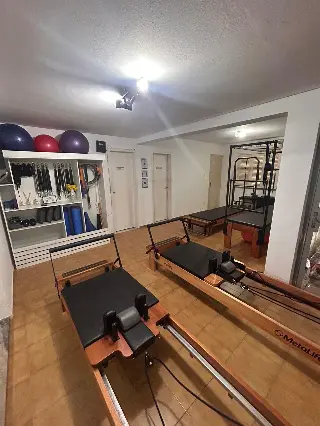
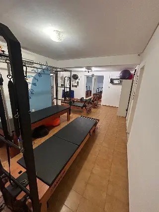
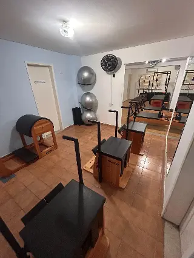

Pilates
Pratique Pilates em nossa sala com aparelhos. Converse com a gente para conhecer as aulas e consultar os horários.
Conversar com a genteTeresina/PI
Aqui em Teresina, reunimos Pilates e cuidados de fisioterapia. Converse com nossa equipe sobre o que você precisa e conheça nossos atendimentos.

Pilates e fisioterapia, com nossa equipe em Teresina.
Conversar pelo WhatsAppConheça nossas áreas de atendimento. Fale com a equipe para saber como agendar e quais cuidados estão disponíveis.
Pratique Pilates em nossa sala com aparelhos. Converse com a gente para conhecer as aulas e consultar os horários.
Conversar com a genteFale com nossa equipe sobre o atendimento de fisioterapia ortopédica e reabilitação e saiba como agendar sua avaliação.
Conversar com a genteConheça nosso atendimento de osteopatia. A equipe orienta você sobre a avaliação e a disponibilidade de horários.
Conversar com a genteConverse com a gente sobre o atendimento de Reeducação Postural Global e como funciona o agendamento.
Conversar com a genteVeja alguns registros de Pilates publicados na nossa galeria. Confirme com a gente os detalhes e o endereço da sua visita.


Estamos em Teresina. Conte o que procura e nossa equipe orienta você sobre os atendimentos e horários.
Acompanhe nosso Instagram(86) 99810-8869
Falar pelo WhatsAppFale com a gente pelo WhatsApp, conte o que procura e consulte os horários disponíveis. Nossa equipe orienta você sobre o agendamento.
Converse com a gente para saber como funcionam as aulas e o que você precisa para a primeira visita.
Rua Coronel Porfírio Lopes, 12, Teresina/PI, CEP 64015-465. Use o link de rota para abrir nossa localização no Google Maps.